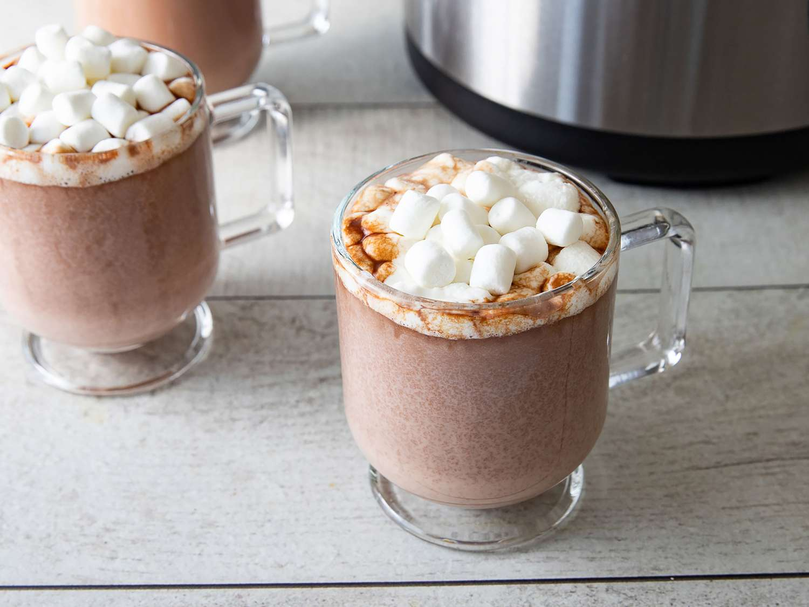

Best Slow Cooker Hot Chocolate

Description
This hot chocolate recipe is perfect all year long. Think about it... how can you say no to fluffy marshmallows, condensed milk, and whipped cream. And that's just icing on the cake. This refreshing beverage can be served both hot and cold. To top it all off it's extremely simple to make. Get ready to get cozy and sip on cloud nine./p>
Ingredients
- 6 cups milk
- 2 cups semisweet chocolate chips
- 1 1/2 cups heavy whipping cream
- 1 (14 ounce) can sweetened condensed milk
- 1 teaspoon vanilla extract
Steps
- Combine milk, chocolate chips, cream, condensed milk, and vanilla in a slow cooker.
- Cover and cook on Low, stirring occasionally, until chocolate chips are melted and mixture is smooth, about 2 hours.